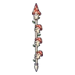
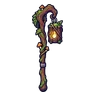

ลูกเห็ดพราย
มอนธาตุดิน Lv 0–0
เจอที่
—
ค่าสถานะตามเลเวล
—
ตีด้วยธาตุไหนดี
แรงขึ้น: ไฟ ×1.5 พิษ ×1.25
เบาลง: ลม ×0.5 ดิน ×0.25
วัตถุดิบที่ดรอป
| ของ | โอกาส | |
|---|---|---|
| หมวกเห็ดพราย | 40% | 1 ชิ้น (15% ได้ 2) |
อุปกรณ์ที่ดรอป (5)
| ของ | โอกาส |
|---|---|
| ชุดเห็ดพราย (เสื้อ) | 0.15% |
| ชุดเห็ดพราย (กางเกง + รองเท้า) | 0.15% |
 หอกยาวลูกเห็ดต่อตัว | 0.12% |
 ตะเกียงขอนไม้กลวง | 0.12% |
| ชุดเห็ดพราย (แหวนเห็ดเรืองแสง) | 0.05% |